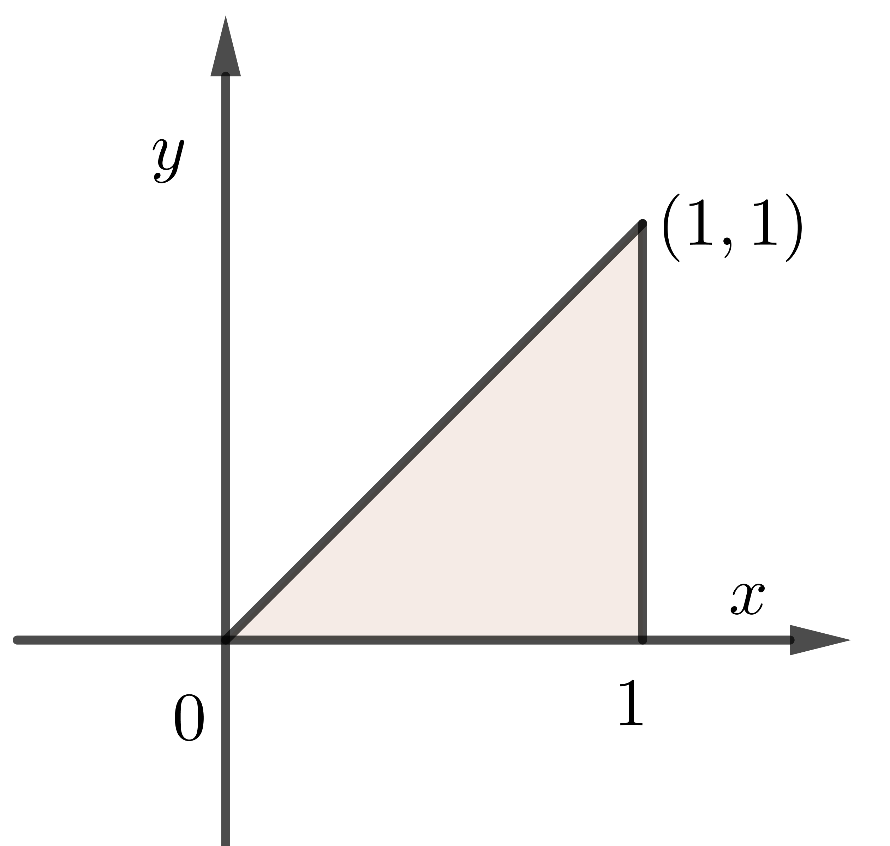
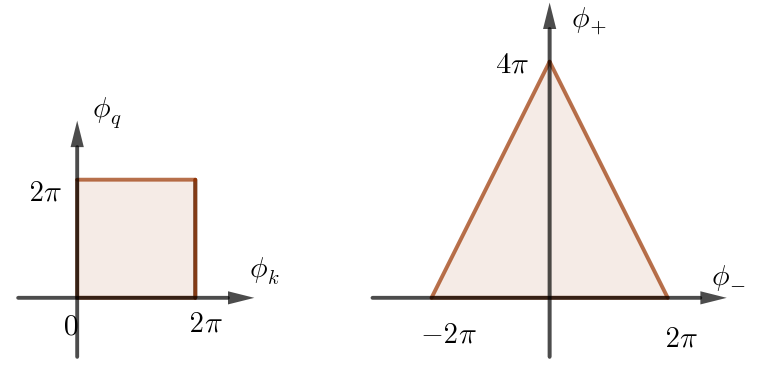

nuqad 的用法
$$\begin{align}
\int_0^1\mathrm{d}y \int_y^1 \mathrm{d}x \cdot(x^2 + y) = \frac{5}{12}
\end{align}$$

from scipy.integrate import nquad
def func(x, y):
return x**2 + y
def range_x(y):
return [0, y]
# 先积 x (y, 1), 再积 y(0, 1)
res = nquad(func, [range_x, [0, 1]])
print(res)
print(5/12)(0.41666666666666663, 1.473075555508962e-14)
0.4166666666666667定积分换元到质心系
$$\begin{align} \int_0^{2\pi} \mathrm{d}\phi_k \int_0^{2\pi}\mathrm{d}\phi_q \cdot f(\phi_k - \phi_q) = \frac{1}{2}\int_{-2\pi}^{2\pi} \mathrm{d}\phi_- \cdot l(\phi_-) f(\phi_-) \end{align}$$where
$$\begin{align} \phi_+ =& \phi_k + \phi_q \\ \phi_- =& \phi_k - \phi_q \\ l(\phi_-) =& \left\{\matrix{4\pi - 2\phi_-, \quad \phi_->0\\ 4\pi + 2\phi_-, \quad \phi_->0}\right. \end{align}$$
import numpy as np
from scipy.integrate import quad
from scipy.integrate import nquad
def l_bound(phi_minus):
if phi_minus > 0:
l_bound = 4*np.pi - 2*phi_minus
else:
l_bound = 4*np.pi + 2*phi_minus
return l_bound
def f(phi_minus):
res = phi_minus + 2*phi_minus**2 + 3*phi_minus**3 - 3**phi_minus
return res
center = quad(lambda phi_minus: l_bound(phi_minus)*f(phi_minus)/2, -2*np.pi,
2*np.pi)
normal = nquad(lambda phi_k, phi_q: f(phi_k-phi_q), [[0, 2*np.pi],
[0, 2*np.pi]])
print(center)
print(normal)(-303.255886295168, 2.462030579408747e-11)
(-303.2558862951685, 2.2693158156346615e-11)Reference
- https://docs.scipy.org/doc/scipy/reference/generated/scipy.integrate.nquad.html
- Stewart, J. Calculus. (Cengage Learning, 2016). Chap 15.9, Change of Variables in Multiple Integrals